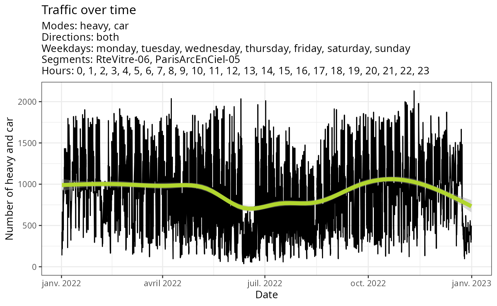
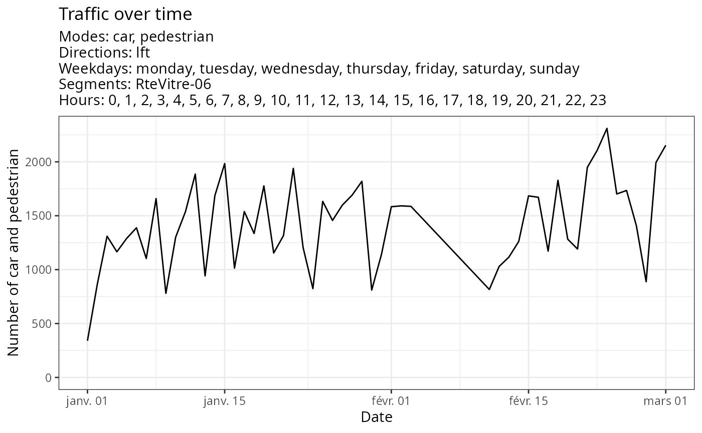
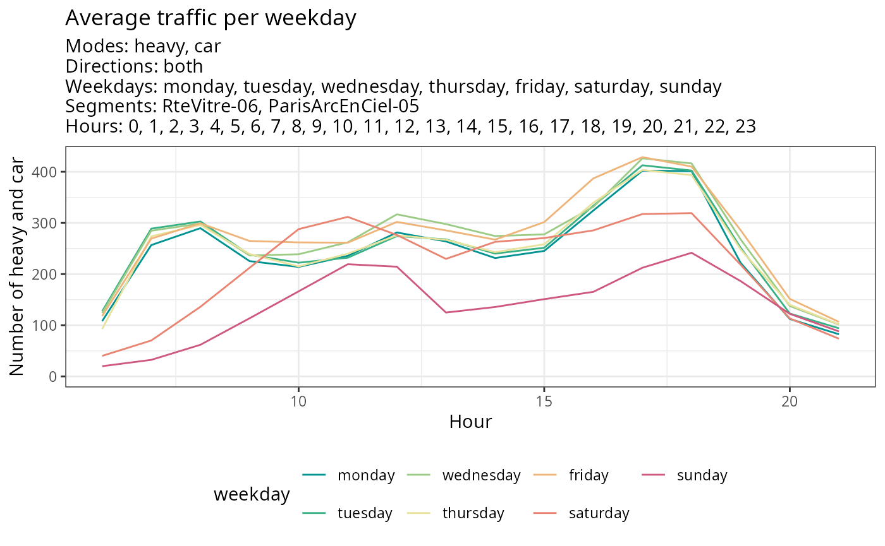
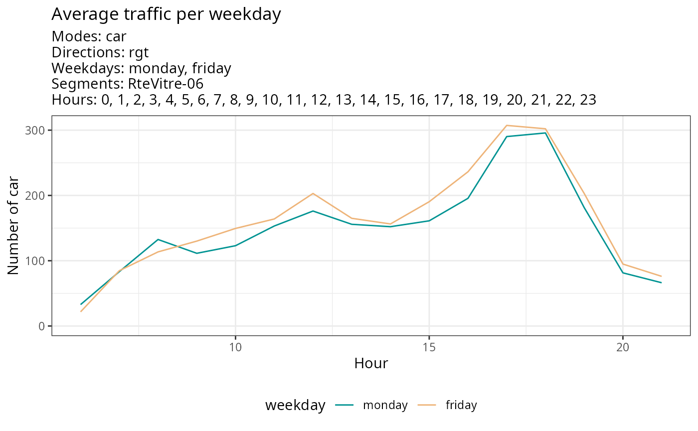
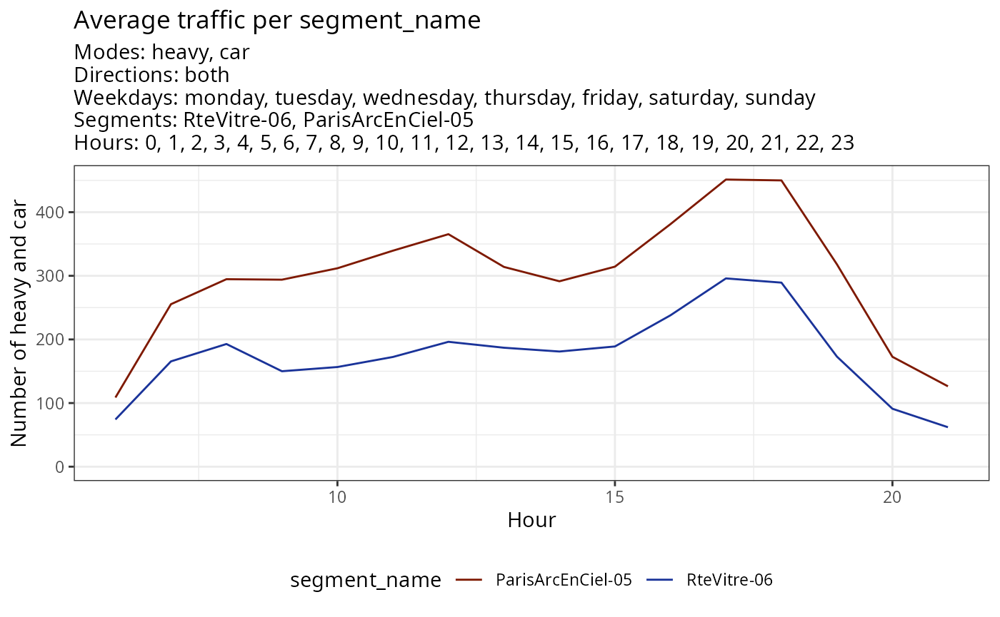
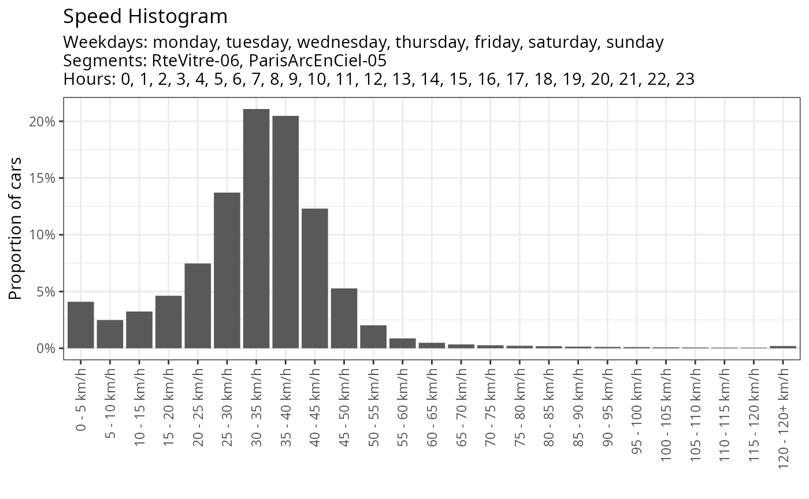
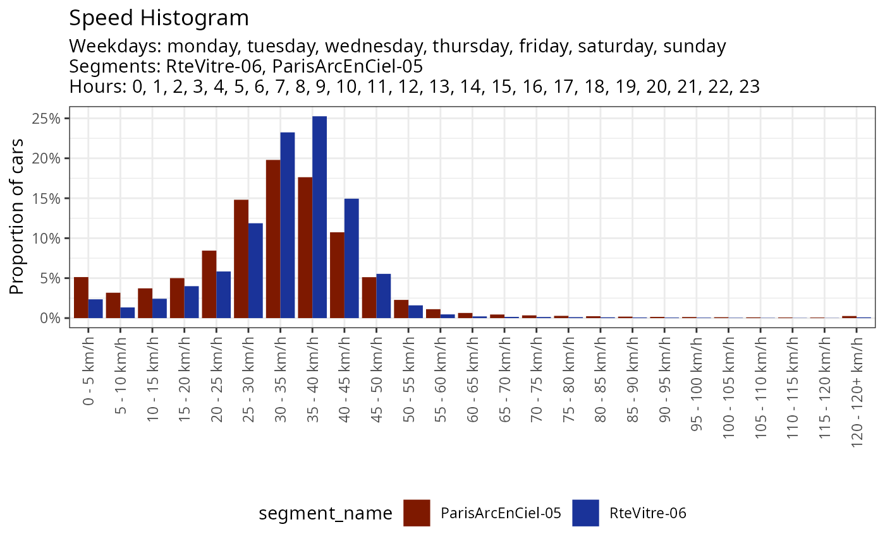
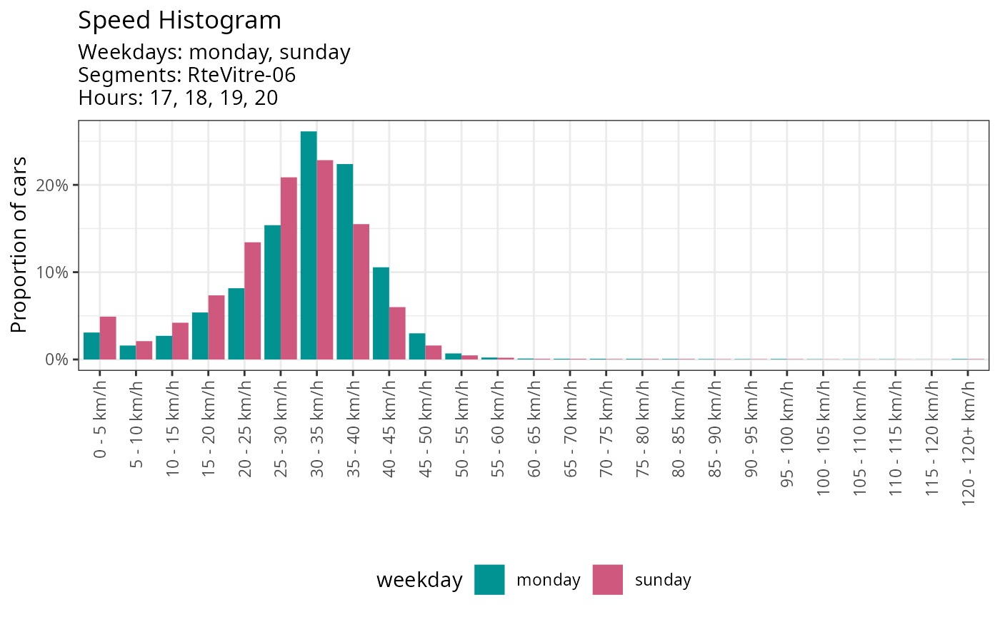

Introduction
This vignette illustrates the potential visualizations (and the ensuing analysis) of traffic data from Telraam sensors provided by the package.
Before we go on, we’ll attach the packages we use.
We will also load the data: here, we will use the dataset attached to
the package, but you can certainly replicate these visualizations and
analyses using data from your own sensors. For more information on data
retrieval, you can refer to the dedicated vignette
(vignette("data-details")).
Included dataset is lazily loaded with the telraamStats package. If
you have already called library(telraamStats), the dataset
is already attached and you can call it directly :
head(traffic)| instance_id | segment_fullname | segment_id | date | interval | uptime | heavy | car | bike | pedestrian | heavy_lft | heavy_rgt | car_lft | car_rgt | bike_lft | bike_rgt | pedestrian_lft | pedestrian_rgt | direction | car_speed_hist_0to70plus | car_speed_hist_0to120plus | timezone | v85 | day | hour | weekday | holiday | vacation | segment_name | uptime_quality |
|---|---|---|---|---|---|---|---|---|---|---|---|---|---|---|---|---|---|---|---|---|---|---|---|---|---|---|---|---|---|
| -1 | 9000001844 - RteVitre-06 | 9000001844 | 2022-01-01 01:00:00 CET | hourly | 0 | 0 | 0 | 0 | 0 | 0 | 0 | 0 | 0 | 0 | 0 | 0 | 0 | 1 | 0, 0, 0, 0, 0, 0, 0, 0 | 0, 0, 0, 0, 0, 0, 0, 0, 0, 0, 0, 0, 0, 0, 0, 0, 0, 0, 0, 0, 0, 0, 0, 0, 0 | Europe/Paris | NA | 2022-01-01 | 1 | saturday | TRUE | Vacances de Noël | RteVitre-06 | FALSE |
| -1 | 9000001844 - RteVitre-06 | 9000001844 | 2022-01-01 02:00:00 CET | hourly | 0 | 0 | 0 | 0 | 0 | 0 | 0 | 0 | 0 | 0 | 0 | 0 | 0 | 1 | 0, 0, 0, 0, 0, 0, 0, 0 | 0, 0, 0, 0, 0, 0, 0, 0, 0, 0, 0, 0, 0, 0, 0, 0, 0, 0, 0, 0, 0, 0, 0, 0, 0 | Europe/Paris | NA | 2022-01-01 | 2 | saturday | TRUE | Vacances de Noël | RteVitre-06 | FALSE |
| -1 | 9000001844 - RteVitre-06 | 9000001844 | 2022-01-01 03:00:00 CET | hourly | 0 | 0 | 0 | 0 | 0 | 0 | 0 | 0 | 0 | 0 | 0 | 0 | 0 | 1 | 0, 0, 0, 0, 0, 0, 0, 0 | 0, 0, 0, 0, 0, 0, 0, 0, 0, 0, 0, 0, 0, 0, 0, 0, 0, 0, 0, 0, 0, 0, 0, 0, 0 | Europe/Paris | NA | 2022-01-01 | 3 | saturday | TRUE | Vacances de Noël | RteVitre-06 | FALSE |
| -1 | 9000001844 - RteVitre-06 | 9000001844 | 2022-01-01 04:00:00 CET | hourly | 0 | 0 | 0 | 0 | 0 | 0 | 0 | 0 | 0 | 0 | 0 | 0 | 0 | 1 | 0, 0, 0, 0, 0, 0, 0, 0 | 0, 0, 0, 0, 0, 0, 0, 0, 0, 0, 0, 0, 0, 0, 0, 0, 0, 0, 0, 0, 0, 0, 0, 0, 0 | Europe/Paris | NA | 2022-01-01 | 4 | saturday | TRUE | Vacances de Noël | RteVitre-06 | FALSE |
| -1 | 9000001844 - RteVitre-06 | 9000001844 | 2022-01-01 05:00:00 CET | hourly | 0 | 0 | 0 | 0 | 0 | 0 | 0 | 0 | 0 | 0 | 0 | 0 | 0 | 1 | 0, 0, 0, 0, 0, 0, 0, 0 | 0, 0, 0, 0, 0, 0, 0, 0, 0, 0, 0, 0, 0, 0, 0, 0, 0, 0, 0, 0, 0, 0, 0, 0, 0 | Europe/Paris | NA | 2022-01-01 | 5 | saturday | TRUE | Vacances de Noël | RteVitre-06 | FALSE |
| -1 | 9000001844 - RteVitre-06 | 9000001844 | 2022-01-01 06:00:00 CET | hourly | 0 | 0 | 0 | 0 | 0 | 0 | 0 | 0 | 0 | 0 | 0 | 0 | 0 | 1 | 0, 0, 0, 0, 0, 0, 0, 0 | 0, 0, 0, 0, 0, 0, 0, 0, 0, 0, 0, 0, 0, 0, 0, 0, 0, 0, 0, 0, 0, 0, 0, 0, 0 | Europe/Paris | NA | 2022-01-01 | 6 | saturday | TRUE | Vacances de Noël | RteVitre-06 | FALSE |
Period availability for your segments
Road segment-specific sensors do not operate continuously; they are limited by daylight duration and may also face other external issues (being unplugged, falling, software problems, etc.). The data collected during a period may not be continuous and could have interruptions ranging from an hour to several days.
To visualize traffic, it is important to be aware of the operating periods of the sensors being analyzed, as well as the quality of their data. The data reliability is provided through the uptime indicator. Uptime, ranging from 0 to 1, corresponds to the percentage of time during which the camera is actively counting passages. Following Telraam’s recommendations, here an uptime lower than 0.5 is considered associated with poor-quality data.
The graphical representation below, obtained using the
gg_availability() function, provides an overview of data
availability and quality for different sensors over the entire period.
It illustrates the daily average uptime evolution: the higher this
value, the better the data quality for that sensor on the respective
day. Its purpose is to assist you in selecting study periods.
plot(
gg_availability(traffic)
)On this graph, for example, we can observe through black time slots that the camera on the segment ‘ParisArcEnCiel-05’ did not report any data at the end of June 2022 and at the end of the year 2022. We can also notice that the average uptime is higher during the summer period. This illustrates the fact that the duration of daylight, and therefore the possible filming period, is longer in summer.
Traffic
Traffic evolution
Once you have identified the specific period you want to analyze, you
may want to observe the evolution of traffic trends over time.
gg_traffic_evolution() enables the representation of
traffic for a particular period, aggregated for all or some segments,
for a specific direction, or aggregated for both, and aggregated for all
transportation modes or for selected ones.
Without specifying any options, you can view the traffic evolution of cars and heavy vehicles for all segments over the entire period. By default, a smoothing curve (based on a GAM model with cubic spline) is used to represent the trend.
plot(
gg_traffic_evolution(traffic)
)
You can specify a date range, one or more segments, different
transportation modes or directions and choose whether you want a
smoothing curve or not. By default, the aggregation is done by day, but
you can obtain more precise information by setting the
agg_day parameter to FALSE to aggregate by
hour.
plot(
gg_traffic_evolution(traffic,
date_range = c('2022-01-01','2022-03-01'),
segment = c(9000001844),
mode = c('car','pedestrian'),
direction = c('lft'),
smoothed = FALSE,
agg_day = FALSE)
)
Average traffic
Average traffic per weekday
The traffic varies according to the days of the week, which can serve as an analytical window to understand territorial mobility. The gg_traffic_avg function allows to examine the average behavior per day of the week. It can be used globally or more specifically (over a specific period, on a segment or set of segments, for a specific direction, for a particular transportation mode).
plot(
gg_traffic_avg(traffic)
)
plot(
gg_traffic_avg(traffic,
date_range = c('2022-01-01','2022-03-01'),
segment = c("RteVitre-06"),
mode = c('car'),
direction = c('rgt'),
weekday = c('monday','friday'))
)
Average traffic per segment
The same function can be used to calculate the average traffic per segment and compare segments with each other.
plot(
gg_traffic_avg(traffic, aggregated_by = "segment_name")
)
Similarly to before, it is possible to specify a period, a direction of travel, a mode of transportation, or here a day of the week.
plot(
gg_traffic_avg(traffic,
aggregated_by = "segment_name",
weekday = c('dimanche'),
mode = c('car'),
direction = c('rgt'))
)Average traffic per mode
plot(
gg_traffic_avg(traffic, aggregated_by = "mode")
)Car speed
Telraam sensors offer speed estimation for cars on two levels :
- the estimated car speed distribution (ranging from 0 to 120+ km/h), in 10 or 5 km/h bins ;
- v85, the estimated car speed limit in km/h that 85% of all cars respect. 15% of drivers drive faster than this v85 indicator.
Telraam specifies that all these speed-related measurements have biases: their accuracy is likely not better than +/- 10%. Moreover, these measurements pertain exclusively to cars and do not include other modes of transportation.
Car speed distribution
The car’s speed distribution can be plotted globally or with filters (specific period, weekdays or segments). Refer to documentation for more information.
plot(
gg_car_speed_histogram(traffic)
)
This function enables you to compare speed histograms for different segments or weekdays.
plot(
gg_car_speed_histogram(traffic, aggregated_by = "segment_name")
)
plot(
gg_car_speed_histogram(traffic,
weekday = c("monday","sunday"),
aggregated_by = "weekday")
)